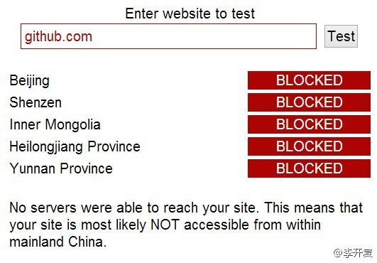

这种租借服务@CSDN 也能提供啊，可供租借的IT男全国各地都有。//@葩客: //@工会朱晓明: 初步租借方案作出来了，请各位完善一下：陪逛街30元/小时，陪吃饭50元/小时(雇主请客)，陪看电影30元/小时(鬼片双倍)，接吻5元/次(礼节性的)，免费提供拥抱、拉手，离别时附赠亲吻额头或脸颊一次@工会朱晓明:“你们工会有张江男租吗？”“没有！”“春节回去想租一个带回家，免得父母亲友……，通过工会租放心”“”“我以为你们张江的工会会很有创新意识的！……员工有这个需求啊。”这个事情工会能做吗？
姣姣期末语文考得不好，临发卷前一天才偷偷告诉我分数，不敢直接告诉爸爸。我给明俊转述，他直接就飙了，觉得女儿的成绩竟然瞒住他，而且认为是我的责任，我负责语文而且总是不重视分数。他余怒未消，第二天一直冷着脸不搭理姣姣。姣姣委屈地哭了把鼻子。俺家矛盾基本都因孩子而起。
回复@庄表伟:俺也是这么说的，鼓励女儿自己把卷子给爸爸看，她担心爸爸会把卷子撕了，而这卷子老师还要收回去。俺说，爸爸要是那么做的话，咱就把卷子粘起来再交给老师，注明是爸爸撕的。 后来女儿还是跟着我一起把卷子递给爸爸… //@庄表伟:应该鼓励女儿，自己主动告诉她爸爸的。@Ada李力:姣姣期末语文考得不好，临发卷前一天才偷偷告诉我分数，不敢直接告诉爸爸。我给明俊转述，他直接就飙了，觉得女儿的成绩竟然瞒住他，而且认为是我的责任，我负责语文而且总是不重视分数。他余怒未消，第二天一直冷着脸不搭理姣姣。姣姣委屈地哭了把鼻子。俺家矛盾基本都因孩子而起。
这个一定要转 @CSDN @程序员杂志 @CSDN范凯@李开复:【强烈抗议封锁GitHub] GitHub是全球最大的社交编程及代码托管网站，近日在国内遭全面屏蔽。在GitHub的300万会员中，中国是第四大国。GitHub是程序员学习和与世界接轨的首选工具。GitHub并无意识形态，也没有反动内容。封锁GitHub毫无道理，只会导致国内程序员和国际脱轨，失去竞争力和前瞻性。转！ 
祝贺连任。//@程辉:没事，github被封阻挡不了我们心向Freedom的决心！//@文光围脖: 赞，在开源社区会有越来越多来自中国的社区领导者和代码，虽然github被封了@程辉:OpenStack基金会2013年个人董事选举结果经过3天公示和审查，终于今天早晨基金会律师Lisa Miller宣布了2013年8位新当选的董事会成员及全体24位董事会成员名单。我得到了286名基金会会员共1022张选票，排名第4，成功连任基金会个人董事！感谢各位支持，2013年必将不辱使命！附名单：网页链接


 ”“我以为你们张江的工会会很有创新意识的！……员工有这个需求啊。”
”“我以为你们张江的工会会很有创新意识的！……员工有这个需求啊。” 这个事情工会能做吗？
这个事情工会能做吗？